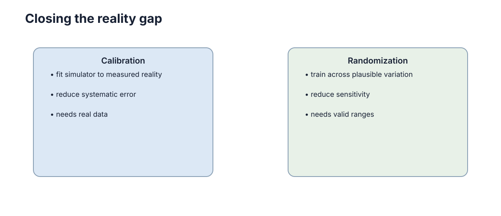

Reality Gap & Domain Randomization
仿真中的策略到了实机性能下降，通常不是因为“仿真没有价值”，而是因为训练过程中依赖了某些在真实世界并不稳定的细节。Reality Gap 就是仿真分布与真实分布之间会影响任务行为的差异。这一页不讨论“仿真像不像”这种只能靠肉眼判断的问题，而是把差距拆成可测量的来源，再用敏感度分析决定：哪些参数必须先校准，哪些应该被随机化，以及随机化范围到底该有多宽。

Reality Gap 的三类来源
只看“策略在实机上变差”无法定位原因，因为同一个现象可能来自完全不同的层次。把差距分类，才有机会分别处理。
第一类是参数差异：模型结构对了，但参数值不准，比如摩擦系数、转动惯量、轮径、连杆长度、电机时间常数。这类差异的特征是可以写成 \(\theta_{\text{true}} \ne \theta_{\text{sim}}\)，并且往往能被测量、标定或者用系统辨识修正。
第二类是结构差异：真实系统里有仿真中根本没有的机制，例如齿轮间隙、传动柔性、接触变形、执行器饱和、电池电压下降。这些不是“参数取值不对”，而是模型形式不对，加大随机化范围也不会消失。
第三类是传感与接口差异：相机内参、白平衡与曝光、IMU 的 bias 与温漂、编码器量化、传感器与控制回路的延迟、通信丢包与控制频率抖动。视觉外观（光照、纹理、材质）可以看作这一类里最难量化的部分。
| 差距来源 | 典型例子 | 在仿真中如何表达 | 主要处理手段 |
|---|---|---|---|
| 参数差异 | 摩擦偏低 20%、轮半径误差 2 mm | 直接改参数值或加区间 | 先校准，再窄范围随机化 |
| 结构差异 | 齿隙、柔性、饱和、电压掉落 | 加死区、一阶延迟、限幅模型 | 结构化建模，不能靠随机化掩盖 |
| 传感差异 | IMU bias、噪声谱、曝光 | 噪声项 + bias 随机化 | 用实测日志统计后随机化 |
| 时序差异 | 控制延迟 20–60 ms、丢包 | 固定延迟缓冲 + 抖动 | 延迟建模 + 延迟随机化 |
| 环境外观 | 光照、纹理、反光 | 材质与光照域随机化 | 用真实图像校准外观范围 |
分类之后会得到一个很实用的判断：参数差异优先校准，结构差异优先补模型，只有剩下的残余不确定性才交给随机化。
最危险的是策略学会利用仿真器的偶然细节
如果摩擦系数永远固定为某个精确值，策略可能形成对这个值高度敏感的动作；如果所有纹理和光照完全一致，视觉模型可能记住仿真外观而非任务结构。这类现象常被称为仿真捷径（simulation shortcut），本质上是 reward hacking 在物理层的一个版本：优化器找到了任务奖励的旁路，而不是任务本身。
一个典型例子是足式机器人学会一种“刚好在这个摩擦系数下不打滑”的步态。它在仿真里回报很高，因为仿真世界永远提供同一个摩擦；到了地毯或瓷砖上，步态立刻失效。另一个例子是机械臂学会利用接触求解器的残余穿透，用“卡进物体一点点”的方式完成抓取——这种动作在真实接触力学里根本不存在。
这类捷径在训练指标上看不出来，部署时才暴露，原因有两个：
- 训练回报是所有随机种子和参数取值上的平均，只要捷径在训练分布上占多数，均值就很好看；
- 验证集同样来自仿真，与被优化的分布共享同样的偶然细节，因此无法发现“策略依赖了这些细节”。
要发现它，常用的方法是在仿真里做轻微扰动测试：把训练时固定的参数（仿真步长、控制频率、求解器迭代次数、随机种子）稍微改一改，看回报是否骤降。如果只把控制频率从 200 Hz 改成 190 Hz 就崩，说明策略依赖了一个真实系统根本不保证的量。
域随机化让训练覆盖一组可能的世界
域随机化（domain randomization）的思路很直接：训练时不再用一个固定世界，而是从一个参数分布里采样世界，策略必须在这一组世界上都工作。形式化地，给定物理参数向量 \(\xi\)（质量、摩擦、延迟等）与任务回报 \(J(\pi, \xi)\)，我们优化的是期望性能：
这里 \(p(\xi)\) 是训练分布，它的支撑集就是“我们愿意让策略适应的那组世界”。
目标不是让环境无限困难，而是让策略对真实系统会发生的变化不敏感。这一点常被误读，于是出现“把范围开到极大来保证鲁棒”的做法，结果策略学会了一个对所有世界都不出彩的保守行为。
与域随机化相邻的还有两个思路，值得区分：
- 对抗式训练：把期望换成最坏情况，即优化 \(\min_\pi \max_\xi J(\pi, \xi)\)。它更严格，但容易陷入极端参数或训练不稳定，实践中通常用固定扰动集做半对抗训练。
- 系统辨识 + 精确仿真：反过来把 \(p(\xi)\) 收窄成一个点，靠精确建模取胜。它在被建模得很好的系统上效率最高，代价是泛化边界很窄。
实际工程里三者经常混用：能标定的先标定，标定不了的用随机化覆盖，最难的部分用对抗训练兜底。
范围太窄和太宽都会出问题
随机化范围是这一页最重要的超参数，而它有两个方向相反的失败模式。
太窄无法覆盖真实参数：策略在训练分布内表现良好，但真实系统刚好落在支撑集之外，属于典型的外推失败，通常表现为“平时很好、偶发崩溃”。
太宽则会让学习问题不必要地困难：一部分采样世界根本不可能出现（负质量、摩擦为零），策略为了在这些世界里也不出大错，会主动放弃速度、幅度和激进度，表现为动作迟缓、回避接触、成功率均匀却都偏低。更糟的是，宽范围会稀释任务信号，让回报的方差远大于学习进步。
| 随机化设置 | 训练回报 | 实机表现 | 诊断方向 |
|---|---|---|---|
| 太窄 | 高、收敛快、方差小 | 偶发失败，失败集中在特定地形/负载 | 参数落在训练区间外，需扩大或补校准 |
| 刚好 | 略低、方差适中 | 下降可控，失败模式与训练一致 | 保持，随后做敏感性复核 |
| 太宽 | 低、方差大、收敛慢 | 动作保守、速度低、回避接触 | 收窄到实测范围，加入课程学习 |
| 中心偏移 | 训练正常 | 实机出现系统性偏差（同方向同量级） | 区间中心错了，优先重新校准 |
最有效的方法通常是先做简单实机实验，找出哪些参数真正影响闭环行为，再重点随机化，而不是一次性把所有参数都打开。
域随机化与系统校准
如果模拟器中的轮距写错一倍，不应该指望“随机化足够大”来掩盖。这里要区分两种误差：
其中 \(b\) 是系统性偏差（标定错误、参数写错、坐标系反了），\(\epsilon\) 是随机波动（公差、磨损、环境变化）。
校准消除 \(b\)，随机化覆盖 \(\epsilon\)。 这两者不能互相替代：随机化对称地扩大区间，无法消除一个恒定的偏移，只会让区间中心仍然偏离真值；反过来，把一个真实的随机波动用一个固定值吃掉，会让策略失去对真随机性的适应能力。
因此一个合理的顺序是：能测量的固定参数先校准 → 残余标定误差用较窄区间覆盖 → 只在真正有变化的地方使用随机化。
| 参数性质 | 处理方式 | 原因 |
|---|---|---|
| 可测且稳定（轮半径、连杆长） | 直接测量并写入模型 | 无残余不确定性，随机化只是噪声 |
| 可测但有公差（质量、惯量） | 校准中心值 + 按公差随机化 | 均值可信，方差已知 |
| 难测但工况相关（摩擦、接触刚度） | 用数据辨识区间 + 随机化 | 无从精确测量，只能表示范围 |
| 结构性缺失（间隙、柔性） | 先补结构模型 | 随机化无法表达模型形式错误 |
| 不应变化（坐标系、单位） | 冻结，写测试防回归 | 一旦错了是 bug，不是不确定性 |
先用小实验测出最敏感的参数
可以分别改变摩擦、延迟、质量或噪声，观察任务指标变化。这就是最朴素的敏感度实验：固定其他量，只动一个，看闭环性能曲线。
实验设计上有几点需要注意：
- 一次只动一个参数（one-at-a-time），否则无法归因；
- 用闭环指标而不是开环误差，因为策略会补偿一部分参数变化，开环误差会高估敏感度；
- 扫描范围要覆盖实测可能范围的两端，否则只能看到局部斜率；
- 重复多个随机种子，否则单次采样的波动会伪装成敏感度。
如果摩擦变化对策略几乎没有影响，就没必要给它很宽的随机范围；如果 50 ms 延迟就让控制明显恶化，延迟模型就应该重点校准。
这种 sensitivity analysis 能让域随机化更有针对性，也让后面的 Real2Sim 有明确的优先级：先修最敏感的那一项，收益最大。
敏感度分析与参数取舍
为了不只依赖肉眼曲线，可以把敏感度写成可比较的量。最常用的是归一化一阶敏感度：
它的含义是“参数 \(\theta_i\) 相对变化 1% 时，任务指标 \(J\) 相对变化百分之几”。实际计算时用中心差分近似：
这个量的好处是量纲无关：摩擦系数、延迟毫秒数、质量千克数可以放进同一张表里排序。工程上通常只做这一步就够用；如果需要更严格的解释，可以进一步分析二阶项或参数之间的交互作用。
得到排序之后，取舍规则可以写得很具体：
- 高敏感 + 可测量 → 优先校准，随机化范围取公差；
- 高敏感 + 不可测 → 必须随机化，范围尽量用数据支撑；
- 低敏感 + 任何情况 → 冻结或给很窄范围，不必占用训练难度预算；
- 敏感度随工况变化（低速不敏感、高速极敏感）→ 用条件随机化，或在课程学习中后期才打开。
| 参数 | 可能范围 | 对任务的影响 | 优先级 |
|---|---|---|---|
| 地面/接触摩擦 | 0.45–1.10 | 打滑、制动距离、抓取稳定性 | 高：直接决定成功与否 |
| 执行器延迟 | 10–60 ms | 跟踪误差、振荡、稳定裕度 | 高：低裕度控制任务必需覆盖 |
| 质量与负载 | ±15% 额定 | 加减速、能耗、位置误差 | 中高：与控制器增益耦合 |
| 传感器噪声/bias | bias 0.01–0.05 m/s² | 估计漂移、状态误差 | 中：影响长期估计而非瞬时 |
| 关节摩擦/阻尼 | ±30% | 低速爬行、能量损耗 | 中：对低速精细任务敏感 |
| 视觉光照与纹理 | 大范围外观变化 | 检测失败、误检 | 高（视觉任务）：决定感知可用性 |
| 环境温度/电压 | 内阻变化 5–20% | 峰值力矩不足 | 低–中：长任务才显现 |
表里最需要警惕的是“优先级高但范围给错”的项：摩擦给 0.05–1.5 这种范围几乎必然让策略变得畏手畏脚，因为区间里有大量现实中不存在的极滑表面。
随机化分布的选择
确定范围之后，还要决定在范围内怎么采样。同一个区间配上不同分布，训练难度和最终策略差别很大。
| 分布 | 适用参数 | 动机 | 风险 |
|---|---|---|---|
| 均匀分布 \(\mathcal{U}(a,b)\) | 已知硬边界、误差形状未知 | 假设最少，覆盖最公平 | 边界附近样本少，可能采到不可能世界 |
| 对数均匀 \(\exp(\mathcal{U}(\ln a,\ln b))\) | 质量、摩擦、增益、时间常数 | 相对变化比绝对变化更有意义 | 要求下界大于零，跨零时不可用 |
| 高斯 \(\mathcal{N}(\mu,\sigma^2)\) | 已有多次测量、误差近似对称 | 中心大概率，符合测量统计 | 尾部无界，可能采到负质量等非法值 |
| 截断高斯 | 有物理边界但更相信中心值 | 兼顾物理合法与统计形状 | 截断后需重新归一化，实现更繁琐 |
| 分位数 / 经验分布 | 有实测样本或历史日志 | 直接复现真实分布，含真实尾部 | 样本不足时外推不可靠 |
| 离散工况集合 | 少数已知难点（地毯、斜坡） | 计算便宜、强调特定场景 | 未覆盖集合之外的中间区域 |
尺度参数为什么常用对数均匀？ 因为摩擦、质量、增益这类量的影响通常与相对变化成正比：摩擦从 0.1 变成 0.2（翻倍）带来的行为改变，与从 0.8 变成 1.6（同样翻倍）大致同量级，而绝对变化 0.1 与 0.8 完全不同。对数均匀保证每个数量级被等概率覆盖：
它的另一个好处是尺度不变：把参数整体乘以常数后采样形状不变，因此不会因为换了单位（毫米换米）而意外改变训练难度。
一个常见的实操形式，是把每个参数的分布、范围与来源一起写进配置：
randomization:
friction: { dist: log_uniform, lo: 0.45, hi: 1.10, source: "瓷砖/地毯实测" }
payload: { dist: uniform, lo: 0.0, hi: 3.0, source: "任务规格" }
latency: { dist: uniform, lo: 0.010, hi: 0.045, unit: s, source: "控制日志 p95" }
sensor_bias: { dist: truncated_normal, mu: 0.0, sigma: 0.02, lo: -0.05, hi: 0.05 }
appearance: { dist: quantile, source: "实机图像集（含逆光）" }
这类配置的价值不在于格式，而在于每个数字都能追问来源；一旦某个范围说不出来源，它多半就是猜的，应该回到敏感度实验或标定记录。
域随机化的失效模式
域随机化不是万能的，它有几类很典型的失效方式，共同点是“训练看起来正常，但行为不是你想要的”。
失效模式一：策略学到过于保守的行为。 这是最常见的。当训练分布中含有大量极端世界时，最小化期望风险的最优解往往是“少动、慢动、不接触”。表现是回报曲线平滑但平台很低，实机上动作幅度小、速度慢、任务完成时间显著变长。它通常不会被当成 bug，因为指标没有崩溃——只是整体平庸。
失效模式二：随机化掩盖了建模错误。 如果某个结构性问题（比如电机实际有 30 ms 延迟而仿真没有）被一个宽泛的随机区间覆盖，策略仍然能训练成功，但它是靠“适应一个错误模型”来成功的。后果是当你后来修正模型时，策略性能反而下降；或者把随机化关掉后性能直接崩溃。这说明训练分布中包含了一个系统性的错误点，而不是合理的多样性。
| 现象 | 诊断方法 | 修正方向 |
|---|---|---|
| 动作保守、速度低、回避接触 | 对比不同随机化宽度下的回报与完成时间，看动作幅值分布 | 收窄到实测范围、加入速度/时间奖励、用课程学习逐步放宽 |
| 关掉随机化后性能崩溃 | 用零随机化重新评估同一策略 | 说明策略靠适应性而非泛化；先校准固定偏差再随机化 |
| 训练回报方差极大、难收敛 | 固定种子对比，画出回报分布而非只看均值 | 减少同时随机的参数个数，改成分阶段调度 |
| 实机失败在训练中从未出现 | 记录失败时的参数估计并与训练区间比对 | 扩展范围或补结构模型，而非只加噪声 |
| 策略对固定常数高度敏感 | 检查动作与步长、控制频率、求解器设置的相关性 | 把这些常数也纳入随机化，或在仿真层消除依赖 |
| 随机化越宽实机越差 | 画出范围宽度与实机成功率的曲线 | 典型的过宽信号，回到敏感度排序重设范围 |
两类失效的根因是同一个：随机化把“不确定性”和“错误”混为一谈。 不确定性应该被覆盖，错误应该被修正。区分方法很简单：把一个参数的区间收成一点，看策略是否仍然工作——如果只在很窄的取值上工作，说明这个参数还没被理解；如果收成真值后反而更差，说明训练分布本身包含了错误的世界。
随机化范围来自测量而非猜测
域随机化的上下界应由硬件公差、标定记录或小规模实测给出。范围过窄无法覆盖现实，过宽则迫使策略为不可能出现的世界付出性能。先做敏感性分析，再把训练资源集中到真正影响任务的参数。
把来源写清楚还有一个工程上的好处：范围是可复核的对象。 当实机出现新失败时，第一步是核对失败工况落在训练区间内还是外；在区间外就是覆盖问题，在区间内就是模型或结构问题。
| 参数 | 范围来源 | 记录方式 |
|---|---|---|
| 质量、惯量 | 厂家数据表 + 载荷规格 | 写进配置文件并注明版本与日期 |
| 摩擦、接触刚度 | 小规模实机实验拟合 | 保存实验数据与拟合脚本 |
| 延迟、丢包 | 通信与控制日志统计 | 汇报分位数（p50/p95/p99）而非均值 |
| 传感器噪声与 bias | 静止段/标定段日志 | 记录 Allan 方差或噪声谱 |
| 视觉外观 | 真实图像集合统计 | 保存图像集与采集条件 |
| 暂无依据的参数 | 先给保守区间并显式标注“未验证” | 在差距清单里标记为待测项 |
这张表配合差距清单使用，就构成一个闭环：测量给范围 → 训练用范围 → 实机给出新证据 → 更新范围。 随机化范围不是一次设定就固定的常数，而是随 Real2Sim 迭代持续收敛的估计量。
下一步：把这一页得到的参数清单、敏感度排序和区间来源，直接带进 Sim2Real & Real2Sim 的误差预算与差距清单；对照 建模与物理仿真 检查哪些差异应该在模型层修正，用 机器人与传感器仿真 实现噪声与延迟注入；需要更严谨的鲁棒目标时，可参考 Optimization, Constraints & Uncertainty 与 Safe, Robust & Offline RL。